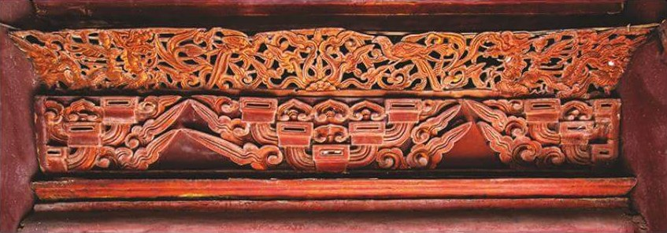

CỐ ĐÔ HOA LƯ
丁王庙外仪门与内仪门

在信仰工程的传统建筑中，“仪门”不仅是一个出入口，还具有划分外部空间和神圣祭祀空间的作用。根据古人的观念，当跨过门槛很高的仪门时，游客需要低头，以保持庄严、虔诚的态度。这也被视为从世俗生活空间向精神文化空间转换的标志，是保留民族文化价值的地方。
两层建筑风格相似的门分别是外仪门和内仪门。这两座仪门都建成了带有3间房的形式，采用“三排柱”的结构。这种建筑被确认为越南至今保存最早的“三排柱”建筑结构，年代可追溯至17世纪。梁柱系统连接得非常牢固。这里的装饰题材相当多样，以龙的形象为主导。凭借高浮雕和透雕技术，这里的龙身躯丰满，配有刀形火焰纹。它们被雕刻成龙巢、群龙的形态，借此寄托了祈求生生不息、世代繁荣的愿望。

在内仪门，除了神龙的形象，民间艺人还在每一寸木材中寄托了人类生活中平淡而深沉的美。那是力量感十足的人类斗兽场景，传达了征服自然的力量和人类奋发向上的渴望；或者是野兽静静休息的画面，让人联想到宁静、祥和的越南乡村景象。特别是，通过刻画骑龙的仙女舞者，人类的形象得到了升华，她们身姿婀娜，舞姿柔美，既充满威严又显得亲近。

总的来说，这些雕刻虽然源于日常生活，却拥有极高的雕刻价值，并蕴含着许多象征意义。神圣之地的庄严与日常生活的亲近气息精妙地结合在一起，注入了一股新的生机，创造出了一个独特的建筑空间，展现了丁先皇庙沉稳而充满灵气的美。
